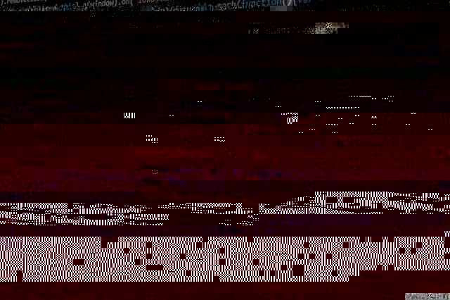

Ransomware is a form of malware that encrypts a victim's files. The attacker then demands a ransom from the victim to restore access to the data upon payment. Users are shown instructions for how to pay a fee to get the decryption key. The costs can range from a few hundred dollars to thousands, payable to cybercriminals in Bitcoin.
CryptoLocker is by now a well known piece of malware that can be especially damaging for any data-driven organization. Once the code has been executed, it encrypts files on desktops and network shares and “holds them for ransom”, prompting any user that tries to open the file to pay a fee to decrypt them. For this reason, CryptoLocker and its variants have come to be known as “ransomware.”
It is a Trojan horse that infects your computer and then searches for files to encrypt. This includes anything on your hard drives and all connected media — for example, USB memory sticks or any shared network drives. In addition, the malware seeks out files and folders you store in the cloud. Only computers running a version of Windows are susceptible to Cryptolocker; the Trojan does not target Macs. Once your desktop or laptop is infected, files are "locked" using what's known as asymmetric encryption. This method relies on two "keys," one public and one private. Hackers encrypt your data using the public key, but it can only be decrypted using the unique private key they hold.
When activated, the malware encrypted certain types of files stored on local and mounted network drives using RSA public-key cryptography, with the private key stored only on the malware's control servers. The malware then displayed a message which offered to decrypt the data if a payment (through either bitcoin or a pre-paid cash voucher) was made by a stated deadline, and it threatened to delete the private key if the deadline passes. If the deadline was not met, the malware offered to decrypt data via an online service provided by the malware's operators, for a significantly higher price in bitcoin. There was no guarantee that payment would release the encrypted content.
Although CryptoLocker itself was easily removed, the affected files remained encrypted in a way which researchers considered unfeasible to break. Many said that the ransom should not be paid, but did not offer any way to recover files; others said that paying the ransom was the only way to recover files that had not been backed up. Some victims claimed that paying the ransom did not always lead to the files being decrypted.
CryptoLocker was isolated in late May 2014 via Operation Tovar, which took down the Gameover ZeuS botnet that had been used to distribute the malware. During the operation, a security firm involved in the process obtained the database of private keys used by CryptoLocker, which was in turn used to build an online tool for recovering the keys and files without paying the ransom. It is believed that the operators of CryptoLocker successfully extorted a total of around $3 million from victims of the trojan. Other instances of encryption-based ransomware that have followed have used the "CryptoLocker" name (or variations), but are otherwise unrelated.
WannaCry is a type of ransomware that infected the National Health Service(NHS) and other organisations across the globe including government institutions in China, Russia, the US and most of Europe. India was among the countries worst affected by the WannaCry attack. NHS England was also the victim of a massive ransomware attack resulting in some patients’ operations being cancelled.
The attack occurred after the USA’s National Security Agency discovered a vulnerability in Microsoft’s software called EternalBlue. This exploit was leaked by a hacker group called the Shadow Brokers earlier this year but the vulnerability was patched by Microsoft as soon as it happened.The problem comes from older versions of Windows or those without Windows Updates, as these were not patched by Microsoft and were left open to attacks. Russia and India were hit particularly hard because Microsoft’s Windows XP-one of the operating systems most at risk- was still widely used in these countries.
WannaCry works by encrypting data on a computer that has been infected and then tells the user that their files have been locked and displays information on how much is to be paid and when payment is taken through Bitcoin(a payment medium).
The attack was halted within a few days of its discovery due to emergency patches released by Microsoft and the discovery of a kill switch that prevented infected computers from spreading WannaCry further.
The WannaCry ransomware attack hit around 230,000 computers globally. One of the first companies affected was the Spanish mobile company, Telefónica. By May 12th, thousands of NHS hospitals and surgeries across the UK were affected. A third of NHS hospital trusts were affected by the attack. Terrifyingly ambulances were reportedly rerouted, leaving people in need of urgent care in need. It was estimated to cost the NHS a whopping £92 million after 19,000 appointments were canceled as a result of the attack. As the ransomware spread beyond Europe, computer systems in 150 countries were crippled. The WannaCry ransomware attack had a substantial financial impact worldwide. It is estimated this cybercrime caused $4 billion in losses across the globe.